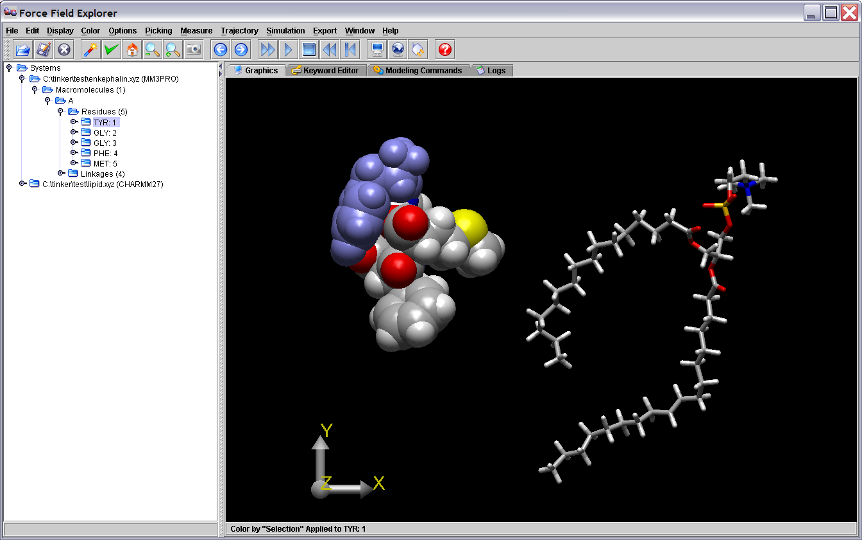
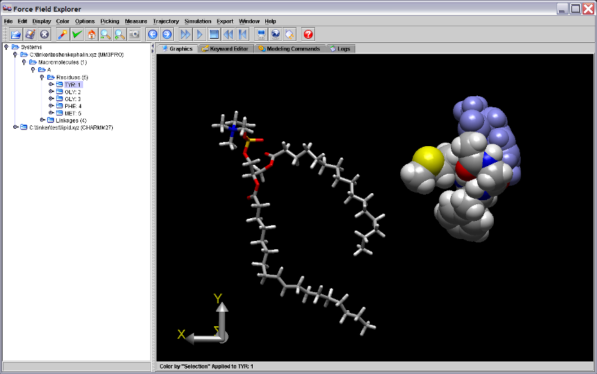

Description of FFE Components¶
Molecular Tree¶
The Molecular Tree is a structural hierarchy of each system, used for navigating and making selections. When Force Field Explorer opens a structure file, it attempts to groups atoms into protein/nucleic acid macromolecules and their constituent residues. It also groups ions, water and hetero molecules together. This is done even in the absence of a Tinker sequence file. When a display or color command is chosen, all currently selected groups of atoms are affected.
{kind=link}
Figure 1. The first residue of the enkephalin peptide is selected in the Tree view and is highlighted in blue on the Graphics Window.
3D Graphics and Global Axis¶
Left-clicking the Global Axis, then dragging performs a rotation about the origin of the entire scene. This is useful for manual docking of two systems. For example, after positioning each system individually in the X-Y plane by dragging them with the mouse, a rotation about the Y-axis allows orientation in the Y-Z plane. Right-clicking the Global Axis, then dragging performs a translation of the entire scene.
{kind=link}
Figure 2. Dragging the Graphics Axis causes the entire scene to rotate about the global origin. The scene above is rotated 180 degrees around the Y-axis.
Keyword Editor¶
The Keyword Editor allows modification of keyword files that control various aspects of Tinker calculations. If a Modeling Command is executed on a system, the corresponding Keyword File is automatically saved. Modifications can also be saved at any time using one of the save buttons. Any text or keywords that Force Field Explorer does not recognize are considered “Comments” and are appended to the end of saved key files. As an example, the enkephalin keyword control file is shown below.

Figure 3. The Keyword Editor Panel displaying the enkephalin keyword file.
Modeling Commands¶
The Modeling Commands panel of Force Field Explorer allows launching of most of the Tinker programs. After selecting a routine and configuring its modifying arguments, selecting the “play” button starts the job running. If Tinker will modify the coordinates of the system, Force Field Explorer will automatically connect to the routine and show progress interactively. If the routine completes before Force Field Explorer is exited, the textual results in the log file are loaded into the Logs panel. If Force Field Explorer exits while one or more routines are running, they continue in the background unless explicitly killed by the user. For example, the “Optimize” command has been selected for enkephalin (Figure 4).

Figure 4. The Tinker OPTIMIZE program selected in the Modeling Commands panel and will execute on the active system, in this case the enkephalin peptide.
Activity Logs¶
The Logs panel is a simple text editor where output logged from Tinker routines is automatically loaded. It can also be used to edit any text file, for example Tinker coordinate or keyword files.

Figure 5. The Log panel showing output logged from running Tinker OPTIMIZE on the enkephalin peptide.
If a modeling command changes the coordinates of an open structure, the final structure generated is re-loaded onto the open structure used to initiate the command.

Figure 6. The coordinates for the final local minimum of enkephalin (enkephalin.xyz_2) are loaded onto the originally opened structure, enkephalin.xyz, used as input to the Tinker OPTIMIZE command.